Étude de références V1 — Jean Prouvé & la Maison Tropicale · l'architecture coloniale à véranda · l'habitat ancestral du golfe de Guinée · la synthèse bioclimatique chaud-humide — et le chapitre de fusion PROUVÉ × NOÉMA avec verdicts INTÉGRER V1 / OPTION V2 / ÉCARTER.
Trois prototypes seulement : Niamey (1949) et Brazzaville (2 en 1951, bureaux de l'Aluminium français). Portique axial en tôle d'acier pliée (le pli donne la rigidité), tout le reste en aluminium ; assemblage boulonné, tolérances de montage acceptées, démontage complet. Noyau habitable 6 × 12 m ceinturé d'une galerie de 2 m (côtés) et 1 m (façade). Panneaux de façade 294,5 × 95,5 × 5 cm — module ≈ 1 m (Noéma : 1,20 m). Kit expédié à plat par avion-cargo, monté en quelques jours sans main-d'œuvre spécialisée. [Sources : ArchEyes ; Galerie Patrick Seguin ; jeanprouve.com ; WikiArquitectura — liens en annexe du .md]
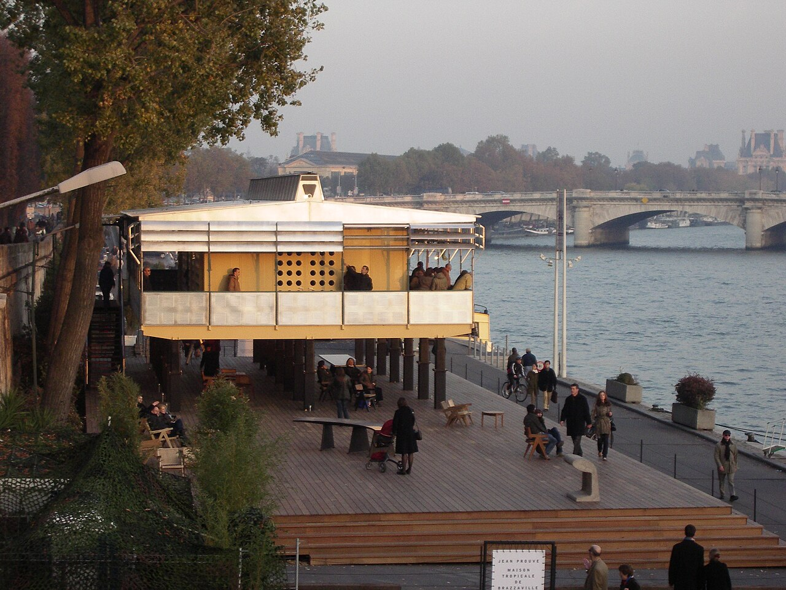
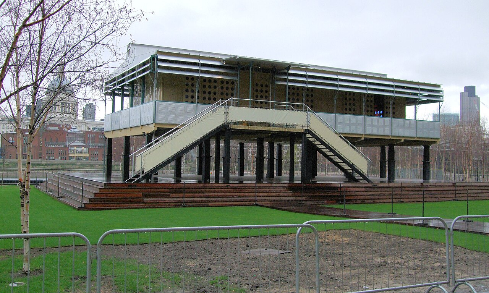
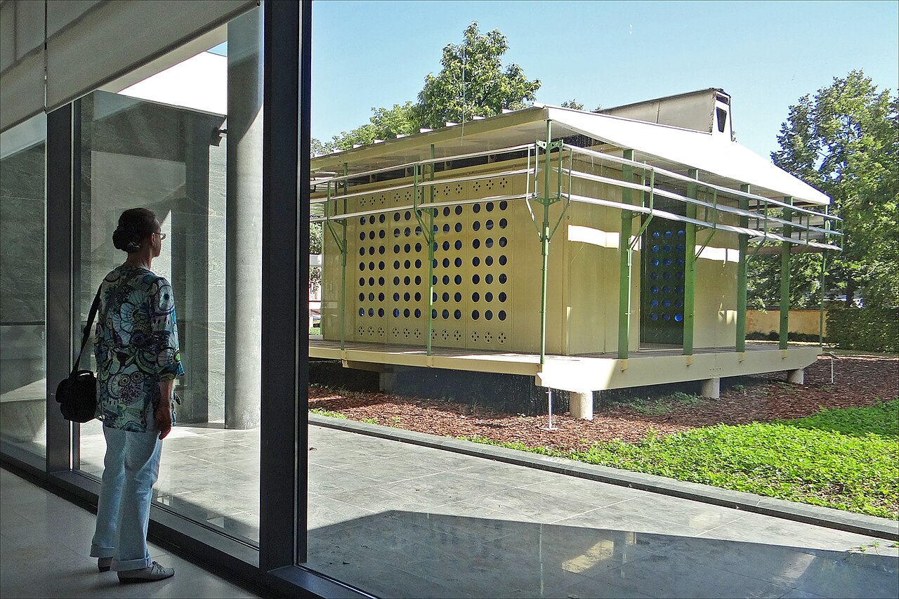
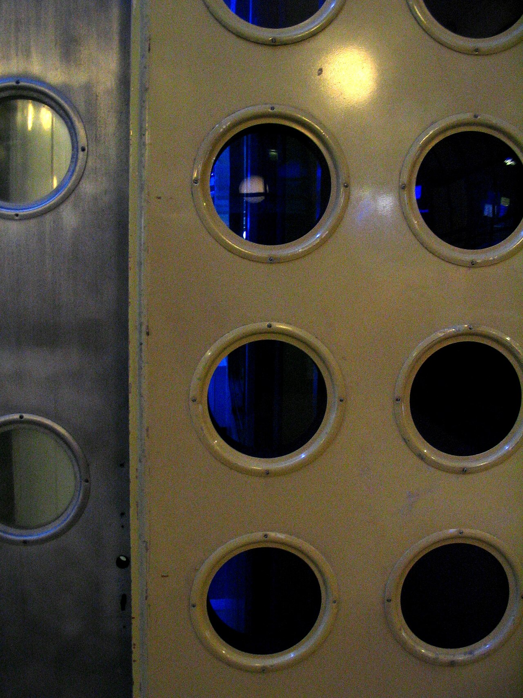
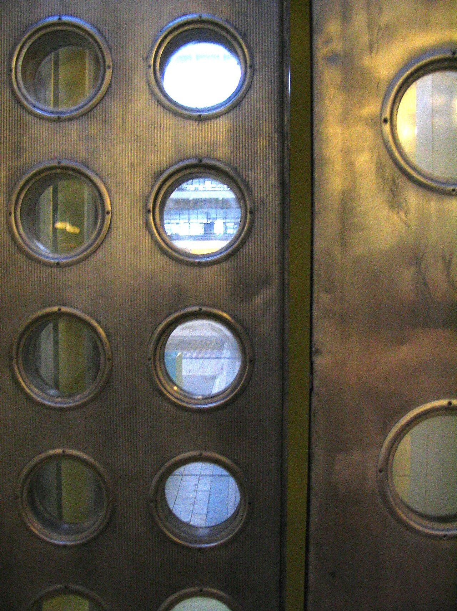
| Dispositif Prouvé | Description | Noéma 2026 |
|---|---|---|
| Double toiture parasol | toit léger décollé, lame d'air, poutre faîtière surélevée créant le tirage | ✅ toit parasol + bandeau 300 + P7 |
| Hublots bleus | double vitrage à face bleue anti-UV dans les panneaux | ❌ manquant → proposition F.2 |
| Brise-soleil ajourés coulissants | écrans alu perforés ; nervures verticales à Brazzaville pour drainer la pluie | casquettes P5 fixes (coulissant : écarté F.4) |
| Véranda périphérique | galerie ombrée 1-2 m, « première peau » | ⚠️ débord 800 = véranda qui s'ignore → F.1 |
| Surélévation | plancher décollé du sol (humidité, insectes) | ✅ plinthe 200 + skid → assumer (F.7) |
| Ventilation traversante réglable | entrées/sorties alignées sur la trame | ✅ P6 → P2, permanente (choix assumé F.5) |
| Ouïes réglables | volets d'aération dans les panneaux | délibérément non repris (rien à casser) |
Doctrine : « il n'y a pas de différence entre la construction d'un meuble et d'une maison » ; « je suis un homme d'usine » (Maxéville, 200 ouvriers, meubles ET maisons). Il meublait ses maisons — la Standard Chair (1934) est toujours produite par Vitra.
L'échec commercial (autopsie d'après les Cahiers du LHAC n°3, ENSA Nancy) : « le principe est bon mais trop cher » (note de Prouvé, nov. 1951) ; le béton avait déjà gagné Brazzaville (« l'usage du béton triomphe ») ; kit jugé trop rigide par les professionnels locaux ; client = administration coloniale dont la commande s'effondre en 1952 ; montage industriel bancal avec le cartel de l'aluminium (« un désastre », dira Prouvé) ; rejet culturel (« objets étrangers »).
Postérité : la maison de Brazzaville, récupérée en 2000, restaurée, est vendue 4,97 M$ chez Christie's (New York, juin 2007, acheteur André Balazs) puis exposée au Centre Pompidou et à la Tate Modern. Une préfabrication dessinée avec rigueur devient un objet de collection : l'argument patrimonial de l'« actif mobile » Noéma a un précédent à 5 M$.
| Cause d'échec Prouvé | Correction Noéma (déjà actée) |
|---|---|
| Aluminium importé par avion, trop cher | Béton produit localement, moules importés une fois |
| Le béton local avait gagné culturellement | Noéma EST en béton — on épouse le vainqueur |
| Client = administration coloniale (boom-bust FIDES) | Client = commerçant local, privé d'abord |
| Dépendance à un cartel industriel | Intégration verticale usine → pose → location |
| Kit rigide, pas d'appropriation | Catalogue fermé MAIS 5 offres + 3 modes de paiement |
| « Objet étranger » | Matériau familier + showroom à toucher |
La véranda fonctionne « à trois niveaux : elle protège les murs contre les rayons directs, elle évite l'entrée des rayons dans les locaux et elle atténue la luminosité excessive du ciel » (congrès de l'urbanisme colonial, 1931/1936 — cité par le LHAC). La galerie est la pièce tampon thermique ; les persiennes-jalousies donnent l'air sans le soleil ni la pluie ; l'imposte ventilée au-dessus des portes évacue l'air chaud ; le soubassement surélevé coupe humidité et termites.
Tri critique : la galerie, les jalousies, l'imposte et la surélévation marchaient vraiment ; les plafonds 3,5-4 m sont efficaces mais chers (Noéma obtient l'effet par le plénum du bandeau 300 sans payer la hauteur de mur). Et l'époque elle-même a critiqué la « véranda panacée » : Prouvé note en 1951 que la galerie apporte « de la chaleur par conduction dans le plancher » → toute véranda Noéma aura son plancher désolidarisé de la dalle intérieure.
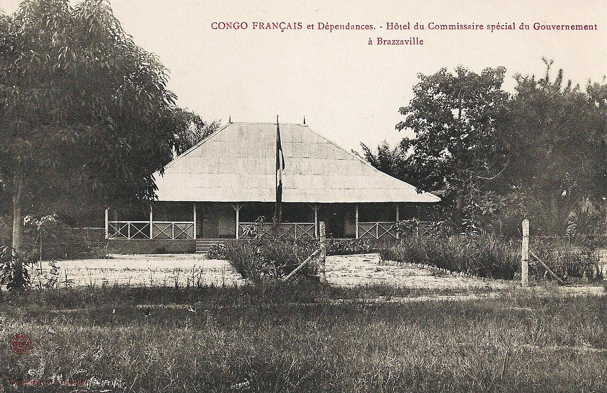
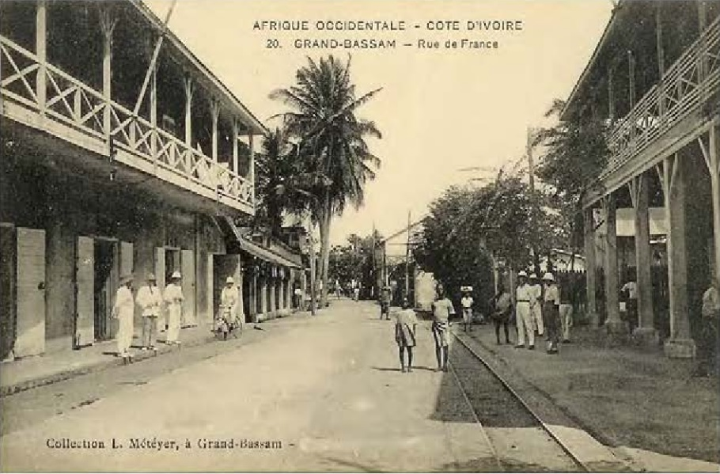
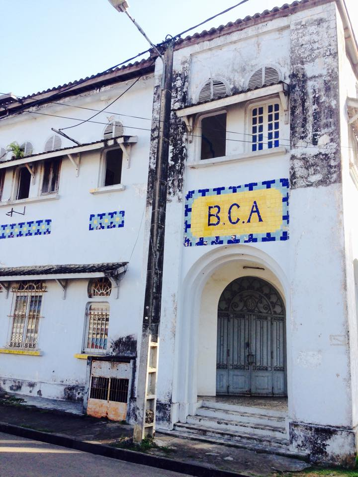
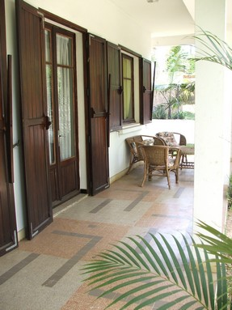
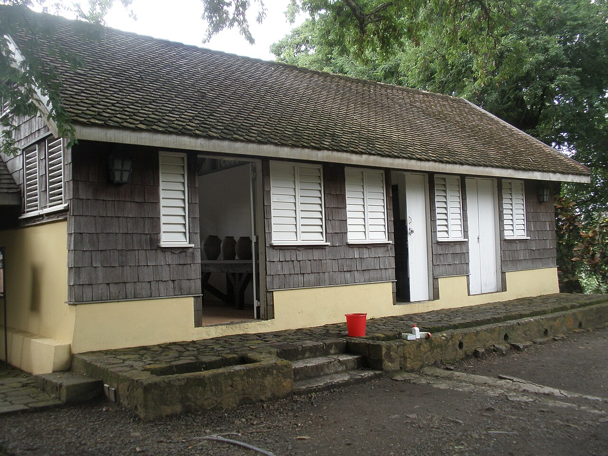
Précédent historique exact du couple P2 + P3 : à Douala (immeuble BAO, années 1950), galeries à double peau « claustra béton brise-soleil extérieur + menuiseries persiennées intérieures, facilitant la ventilation des pièces traversantes » (LHAC n°3). Argument commercial : le pack climat Noéma est la version industrialisée de ce que Bassam faisait il y a 120 ans — un patrimoine ivoirien, pas une importation.
Akan/Baoulé (CI) : la cour centrale et l'apatam — l'auvent où se passent repas, repos et réception. La vie se déroule SOUS LE TOIT, pas entre les murs. À noter aussi la maison annulaire à impluvium des Dida (ORSTOM/Persée, 1964). Fang (Gabon) : village-rue de cases en écorce et raphia, fermé par les corps de garde — le bâtiment social ouvert ; murs respirants, auvents de palmes. Ganvié (lac Nokoué) : pilotis en bois durs ; la surélévation « limite les remontées capillaires… l'air circule sous le plancher, limitant la surchauffe et évacuant l'humidité ».
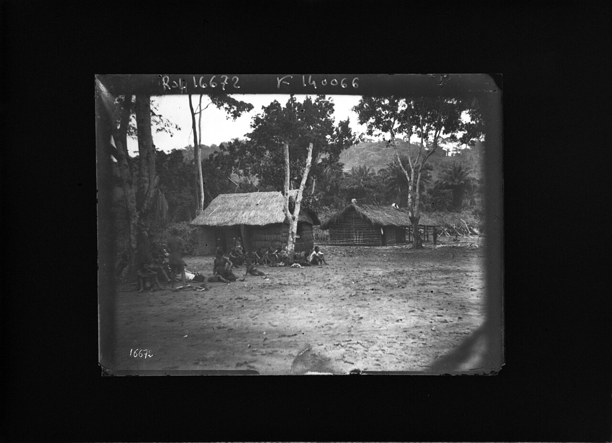
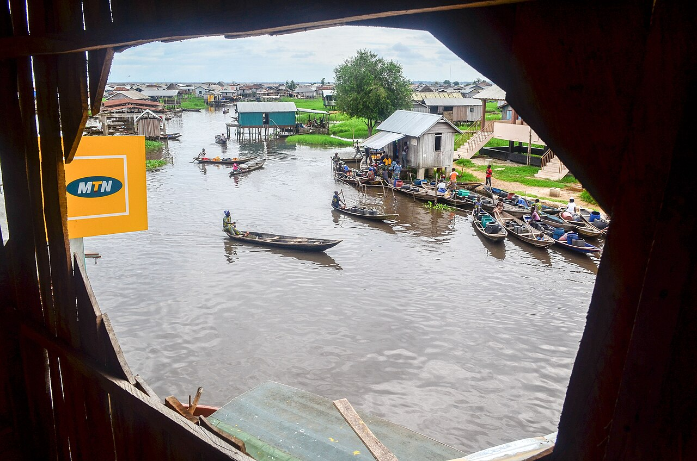
Principes transversaux → verdicts Noéma : ① l'ombre avant le mur (✅ toit parasol, débords, casquettes) ; ② le toit avant la façade — le produit minimal ancestral est un toit sur poteaux (→ véranda F.1, kit surtoiture F.8) ; ③ l'air traverse TOUJOURS — jamais d'obturation (✅ P2/P6 non fermables : à ne pas remettre en cause) ; ④ la surélévation gère l'eau (✅ plinthe 200 + skid → à assumer esthétiquement, F.7).
Règles de l'art : la ventilation traversante est la stratégie passive n°1 (~4 °C ressentis gagnés par la vitesse d'air — A. Perrau, La Réunion) ; porosité de façade de référence ~25 % (optimum 30 % au vent / 40 % sous le vent) ; masque solaire total ; et inertie FAIBLE recherchée — contrairement au chaud-sec — car l'amplitude jour/nuit ≤ 6 °C et les nuits chaudes font restituer la masse au mauvais moment (YourHome, gouv. australien).
Références contemporaines (hors Kéré) : Îlet du Centre (Perrau + Reynaud, La Réunion, 2008) — 66 logements + bureaux sans aucune climatisation en centre-ville tropical ; VTN Architects / Vo Trong Nghia (Vietnam) — maisons urbaines sans clim par claustras terracotta et doubles peaux (le claustra comme langage premium contemporain) ; Green School (Bali, 2008) — salles de classe entièrement ouvertes sous grands toits : le « toit avant façade » validé pour un équipement public équatorial.
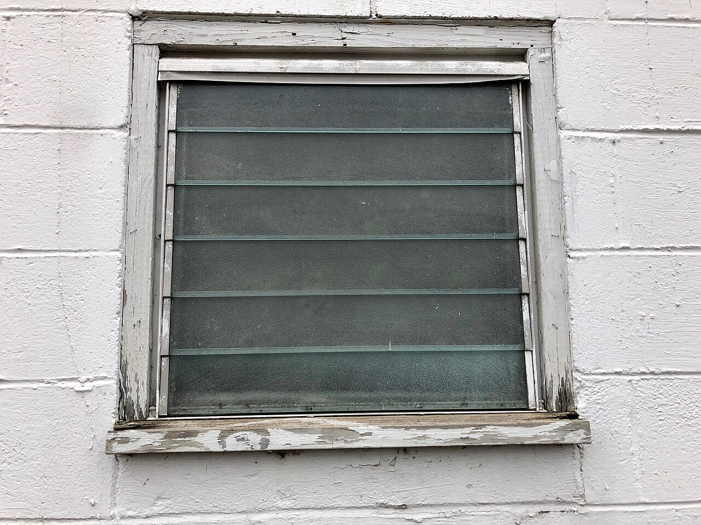
Le P1 60 mm pèse 144 kg/m² — un des murs béton les plus légers du marché (parpaing 20 enduit : ~400-450 kg/m²). La règle « inertie faible » condamne le mur massif QUI PREND LE SOLEIL ; or dans le système Noéma le rayonnement direct ne touche pratiquement jamais les panneaux (toit parasol + débords 600-800 + casquettes P5 + orientation N-S) et la ventilation est permanente et non obturable : la restitution nocturne du voile mince (constante de temps ~2-4 h [CALCUL]) est évacuée au fil de l'eau. Verdict : compatible chaud-humide À CONDITION du pack climat complet — le pack n'est pas une option marketing, c'est la condition physique de validité du matériau. Vigilances : façade OUEST (règle d'implantation obligatoire : services/pièce d'eau en bouclier — déjà le mémento de Prouvé : « protection très grande à l'ouest ») ; teintes claires ; et ajout d'un essai E10 — monitoring thermique 72 h du prototype (sondes int/ext + surfaces est/ouest, critère [HYP] : T° surface intérieure ≤ T° air ext + 2 °C à 22 h). La variante « 2ᵉ rang claustra » (étude opti-panneaux) devient aussi un levier thermique.
| Principe Prouvé 1949 | Noéma 2026 | État |
|---|---|---|
| Kit complet fabriqué à l'atelier | « La pièce finie, montée, branchée » | identique |
| Trame fixe (~1 m) | Trame 1 200, tout multiple | identique |
| Catalogue fermé de composants répétés | P1-P9, dérogations tracées | identique |
| Boulonné à sec, tolérances, démontable | Rainure 70, à sec, skid démontable | + actif mobile |
| Montage en quelques jours sans spécialiste | 1 jour, manuporté à 4 | Noéma fait mieux |
| Double toiture parasol (1949) | Toit parasol + bandeau 300 + P7 | identique |
| Brise-soleil / persiennes / panneaux ajourés | P2 + P3 + P5 | identique |
| Imposte au-dessus des portes | P4 = porte + imposte 300 | identique |
| Surélévation anti-humidité | Plinthe 200 + arase + skid | identique |
| Véranda périphérique vécue | Débord avant 800 (auvent) | embryon → F.1 |
| Signature visuelle instantanée (hublots bleus) | — | manquant → F.2 |
| Mobilier conçu avec la maison | — | manquant → F.6 |
| # | Proposition (croquis de principe) | Compatibilité | Coût | Verdict |
|---|---|---|---|---|
| F.1a | Le seuil Noéma : bande de sol finie prof. 1200 sous le débord avant — 2 caillebotis = P1 réemployés au sol (Location) ou dalle débordante (Vendu) + 2 douilles M10 en sous-face de bandeau (enseigne/store) + banc préfa optionnel | trame ✅ · catalogue ✅ (réemploi P1) · manuporté ✅ · zéro coupe ✅ | faible [HYP] | INTÉGRER V1 |
| F.1b | Véranda travée : extension du toit parasol d'1 travée (1200) sur 2 poteaux standards + pannes rallongées, sol en P1, plancher désolidarisé (leçon Prouvé 1951) | trame ✅ · vent à recalculer (+25 % de toiture) [TBV] | moyen [HYP] | OPTION V2 |
| F.2 | L'œil Noéma : réservation circulaire Ø300 moulée dans un P1 (insert de moule, comme le guichet du gardiennage) + hublot fixe verre/polycarbonate bleu sur joint EPDM, 1 par module près de la porte, axe ~1550. Fixe = zéro risque pluie. −10 kg | trame ✅ · insert moule ✅ · treillis à dévier [TBV STRUCT] | faible [HYP] | INTÉGRER V1 |
| F.3 | Imposte P4 toujours claustra ventilé (règle de configuration — jamais un P1 plein au-dessus d'une porte) | ✅ règle, aucun composant | nul | INTÉGRER V1 |
| F.4 | Persiennes coulissantes de façade (rails, quincaillerie mobile en zone côtière ; fonction déjà tenue par P2+P3+P5 et volet P9) | ⚠️ corrosion, maintenance | moyen | ÉCARTER |
| F.5 | Ouïes réglables façon Prouvé — contraire au principe ancestral « l'air traverse toujours » et au produit sans entretien | — | — | ÉCARTER (choix documenté) |
| F.6 | Pack meublé sur douilles M10 déjà moulées (pas 1200 = module du mobilier) : tablette-bureau rabattable 1200×400, étagère 1200, banc/lit. Zéro percement site. Fabrication métallique locale sous-traitée | trame ✅ · douilles existantes ✅ | faible-moyen [HYP] | INTÉGRER V1 (Studio & Box) |
| F.7 | Surélévation assumée : skid peint Night #000A21, ligne d'ombre visible, pas de jupe pleine (air + termites) — le module « flotte », lecture immédiate de la réversibilité | ✅ spec de finition | quasi nul [HYP] | INTÉGRER V1 |
| F.8 | Kit surtoiture parasol pour boxes/containers existants — le conseil fait à Prouvé en 1951 (« vendre seulement les éléments de toiture »), jamais exécuté. Produit d'appel −6 à −10 °C, porte d'entrée vers la location. Structure canopy dédiée SANS le lest du module | [TBV vent canopy isolé — ne pas réutiliser les équerres telles quelles] | étude | OPTION V2 |
| F.9 | La couleur par le verre : le bleu Prouvé entre par le hublot (≈ Dew #B0DDF1 en transparence) ; liseré peint optionnel sur le bandeau 300 ; Orange réservé aux CTA ; béton brut clair partout ailleurs | ✅ | faible | V1 (hublot) · V2 (liseré) |
| D.3 | Essai E10 — monitoring thermique 72 h du prototype (2 enregistreurs, critère de restitution nocturne) | — | ~50 k XOF [HYP] | INTÉGRER V1 (essais) |
Cinq traits — aucun moule nouveau — pour être reconnaissable comme un Prouvé : ① le toit qui flotte (tôle blanche détachée par la ligne d'ombre du bandeau 300) · ② la ligne d'air (bande claustra P2 continue, qui s'allume en pointillés la nuit) · ③ l'œil bleu (hublot Ø300 près de la porte — aucun concurrent ne l'a) · ④ le rythme 1200 (poteaux rainurés et joints lisibles = la précision d'usine affichée) · ⑤ le socle noir (ligne Night du skid : posé, réversible, récupérable).
Silhouette-mémo : un trait blanc, un pointillé, un rond bleu, quatre verticales, un trait noir. Dessinable en dix secondes — donc mémorisable, donc une marque.
{kind=link}
_(7899627842).jpg){kind=link}
{kind=link}
{kind=link}
.jpg){kind=link}
{kind=link}
{kind=link}
_-_06.jpg){kind=link}
{kind=link}
{kind=link}